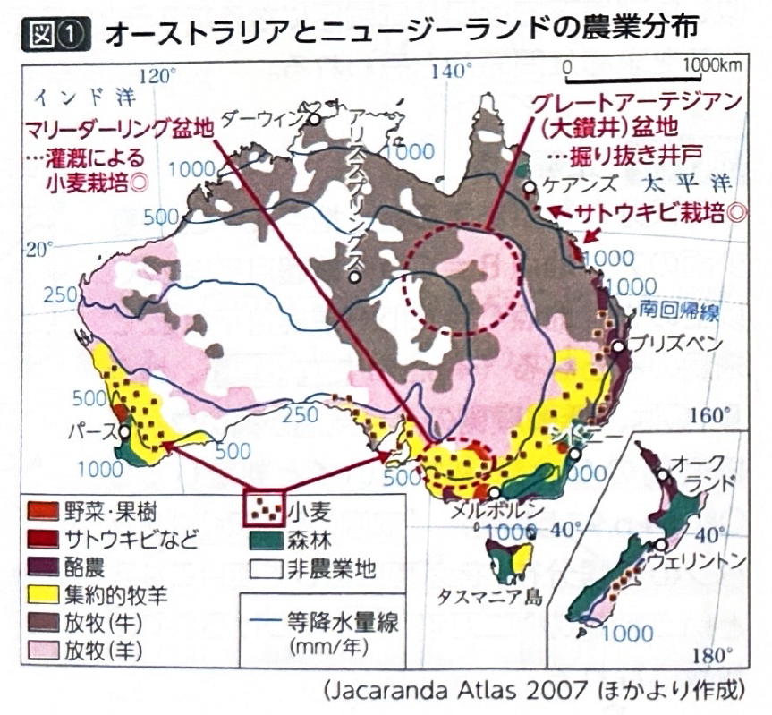
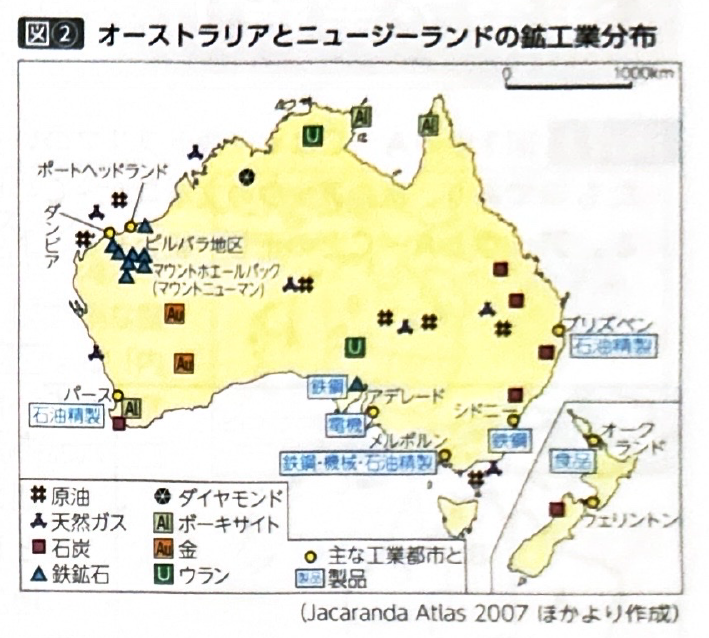
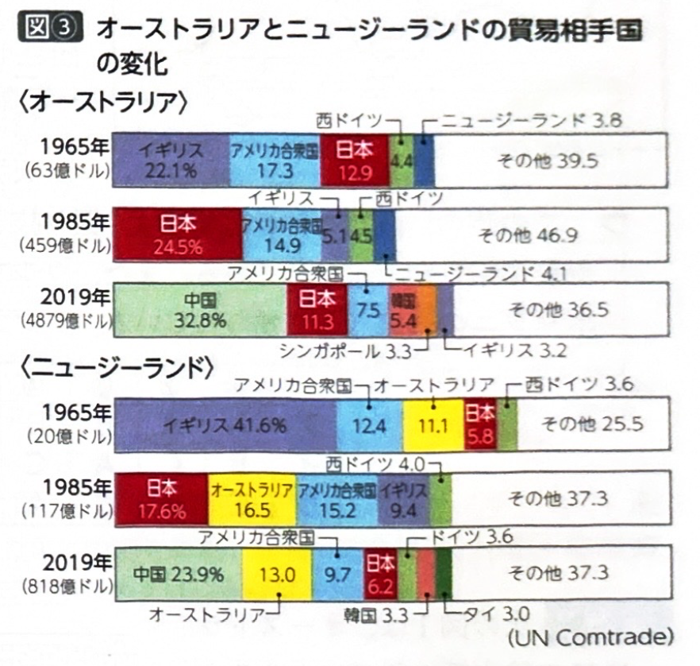
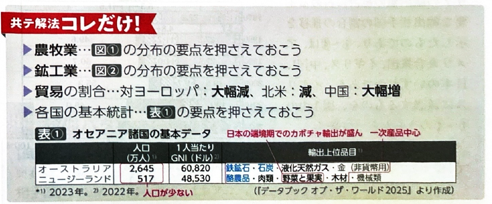

第9章 オセアニア - 産業
ポイント総復習
1. オーストラリアとニュージーランドの農牧業
オーストラリアとニュージーランドは、どちらも一次産品（鉱産資源や農産物）や食料品の輸出が中心となっている珍しい先進国です。
| 国名・地域 | 農業・牧畜の特徴 |
|---|---|
| オーストラリア （内陸部・北部） |
乾燥した内陸のグレートアーテジアン盆地（大鑽井盆地）では、被圧地下水を利用してメリノ種などの牧羊が広く営まれています。また、北部を中心に牧牛が行われ、牛肉や羊毛の輸出が盛んです。 |
| オーストラリア （東部・南部） |
降水量の多い東部では、フィードロットによる肉牛の肥育が盛んです。 やや降水量の多い南西部や南東部では小麦栽培が行われます。また、南東部のマリーダーリング盆地では、東岸の多雨地域から水を引く灌漑（かんがい）計画（スノーウィーマウンテンズ計画）により農地が拡大しました。 |
| ニュージーランド |
北島では酪農や肉牛飼育が盛んです。 南島では、偏西風がサザンアルプス山脈に遮られて風下側（東側）がやや乾燥するため、羊の飼育と小麦栽培を組み合わせた混合農業がみられます。 |

2. オセアニアの鉱産資源と工業
オーストラリアは鉱産資源の宝庫であり、資源の産出地域は試験で頻出です。
| 鉱産資源 | オーストラリアでの主な産出地域・特徴 |
|---|---|
| 鉄鉱石 | 主に北西部の安定陸塊（ピルバラ地区など）で産出され、中国や日本へ輸出されます。鉄鉱石は生産・輸出ともに世界一です。 |
| 石炭 | 主に東部の古期造山帯（グレートディヴァイディング山脈周辺）で産出されます。 |
| ボーキサイト | 主に北部の熱帯地域で多く産出されます。 |
| その他の資源 | 金や、原子力発電の燃料となるウランも豊富に産出されます。 |
- ニュージーランドの工業：資源に乏しいですが、食品加工業のほか、豊富な水力発電をいかしたアルミニウム生産がみられます。

3. 貿易相手国の変化（アジアへの接近）
オーストラリアとニュージーランドの貿易相手国は、歴史的に大きく変化してきました。
- かつての貿易：旧宗主国であり、結びつきが強かったイギリスとの貿易が中心でした。
- 現在の貿易：イギリスの地位が大きく低下し、代わって中国や日本、アメリカ合衆国といった環太平洋諸国やアジアの国々が貿易の上位を占めるようになっています。


基礎問題（理解度チェック）
Q1. オーストラリアの農業と地形について、空欄を埋めなさい。
オーストラリアの内陸に広がる
では、自噴する
を利用して羊を飼育する
が広く営まれている。一方、南東部のマリーダーリング盆地では、東岸の多雨地域から水を引く
計画とよばれる灌漑によって農地が拡大し、小麦栽培などが盛んに行われている。
Q2. ニュージーランドの農牧業について、空欄を埋めなさい。
ニュージーランドの北島では主に
や肉牛飼育が盛んである。一方、南島ではサザンアルプス山脈の風下にあたる
がやや乾燥するため、
を組み合わせた混合農業がみられる。
Q3. オセアニアの鉱産資源について、空欄を埋めなさい。
オーストラリアでは資源の分布に明確な特徴がある。ピルバラ地区などの
の安定陸塊では
が多く産出され、生産量・輸出量ともに世界一を誇る。一方、古期造山帯が連なる
では
が多く産出される。
Q4. ニュージーランドは鉱産資源に乏しいが、国内の河川や氷河を利用した豊富な水力発電をいかし、電力を大量に消費するアルミニウムの精錬が行われている。
Q5. オーストラリアとニュージーランドは、現在でも旧宗主国であるイギリスとの経済的な結びつきが最も強く、貿易相手国のトップは常にイギリスが占めている。